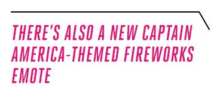

A Captain America skin is now available in Fortnite, Epic Games announced today. He’s the latest comic-themed skin to be added to the popular free-to-play battle royale game. Captain America costs 2,000 V-bucks (about $20) from the Fortnite in-game store. If you buy the skin, you’ll also get Captain America’s iconic shield, which isn’t just cosmetic — you’ll be able to wear it on your back and use it as a pickaxe in-game. Captain America’s shield has actually already appeared in the game before — you could wield it last year as a special item in a limited time Avengers-themed mode, but you weren’t able to buy it to wear whenever you wanted.

There’s also a new Captain America-themed fireworks emote for sale, which could be fun to deploy if you choose to celebrate Independence Day on the Fortnite island this weekend. The emote costs 300 V-bucks.
Fortnite has a long history of offering skins based on popular comic book characters. Deadpool was available as part of last season’s battle pass, and Aquaman will eventually be playable as part of this season’s battle pass. Epic Games also sold Marvel’s Black Widow and Star-Lord as part of last year’s Avengers crossover and X-Force skins last season. Epic has offered DC skins, too, including Harley Quinn, Batman, and Catwoman.